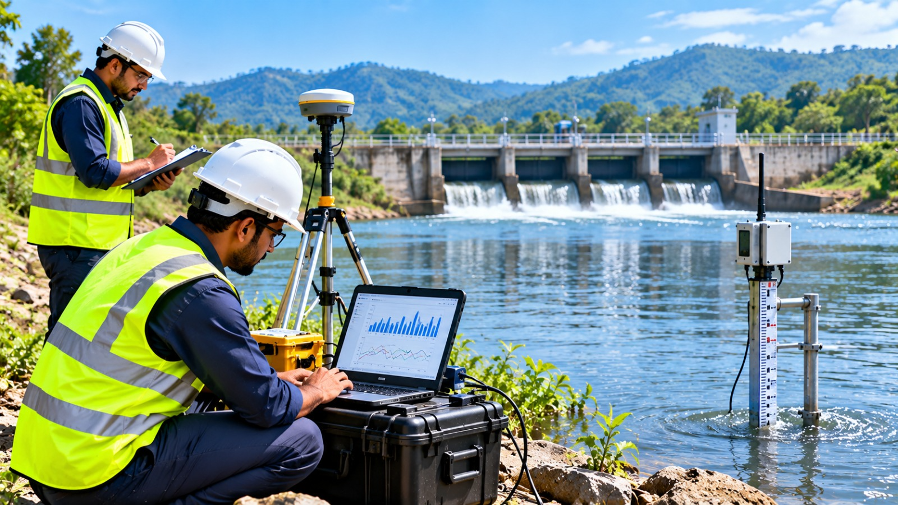

.png) 01
01INVESTIGATION
Groundwater Survey & Investigation (sTEM)
Scientific groundwater investigation using sTEM-based interpretation for better subsurface understanding.
Explore ServiceFrom scientific investigation to implementation and compliance, our teams deliver practical water-resource solutions for every site condition.
Choose a service to explore the right technical support for your groundwater, environmental and water-management requirements.
01Scientific groundwater investigation using sTEM-based interpretation for better subsurface understanding.
Explore Service 02
02Sustainable rainwater harvesting systems designed for efficient collection and conservation.
Explore Service 03
03Reliable borewell drilling services with expert technical support, casing and development guidance.
Explore Service 04
04Complete application support for smooth groundwater abstraction permissions and CGWA approvals.
Explore Service 05
05Accurate water flow meters for reliable measurement and operational reporting.
Explore Service 06
06Professional recharge-well cleaning and media maintenance for improved groundwater recharge.
Explore Service 07
07Comprehensive water audits to optimize consumption, reduce losses and improve efficiency.
Explore Service 08
08Professional calibration that supports accurate water measurement and dependable performance.
Explore Service 09
09High-quality piezometer supply for accurate groundwater monitoring and field measurement.
Explore Service 10
10Comprehensive geotechnical investigations for safe infrastructure and development projects.
Explore Service 11
11Detailed impact assessment reports supporting regulatory review and environmental decision-making.
Explore Service 12
12Precise pumping tests for dependable aquifer performance evaluation and well design.
Explore Service 13
13Comprehensive water quality analysis for safe resource management and informed decisions.
Explore Service 14
14Non-destructive subsurface investigation for utilities, strata and groundwater-sensitive site planning.
Explore Service 15
15Water-credit support for measuring conservation outcomes and planning responsible water stewardship.
Explore Service 16
16Effective environmental remediation solutions for contaminated sites and responsible restoration.
Explore Service 17
17Hydrological and site-based flood analysis to understand risk, drainage patterns and mitigation needs.
Explore Service
18Hydrological studies that connect rainfall, surface water, aquifers and site-level water availability.
Explore Service
We are committed to providing innovative and practical solutions for land, water and environment management.
Talk to our senior hydrogeologists for site survey & technical feasibility.